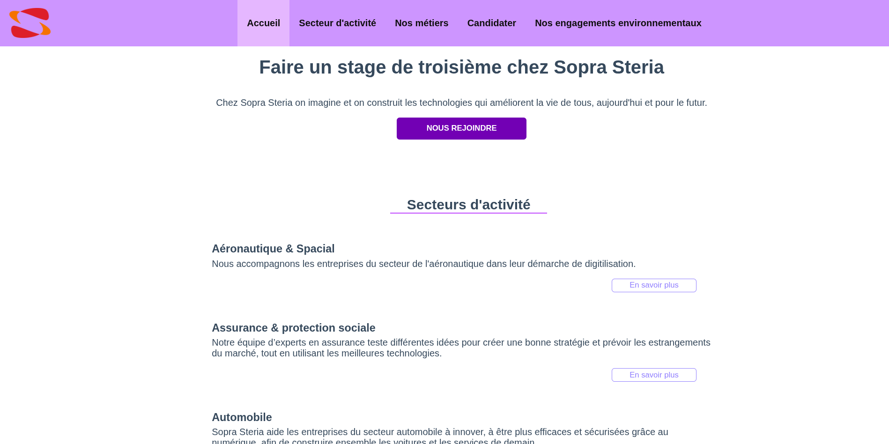
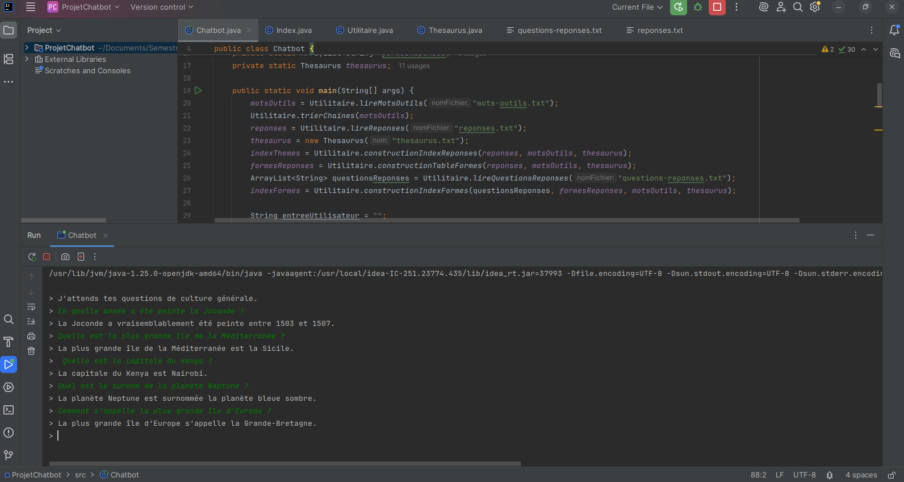
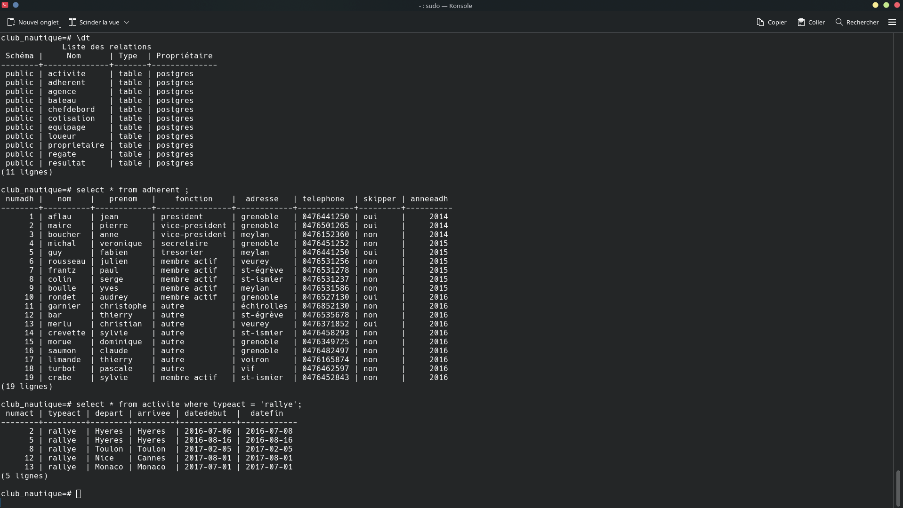
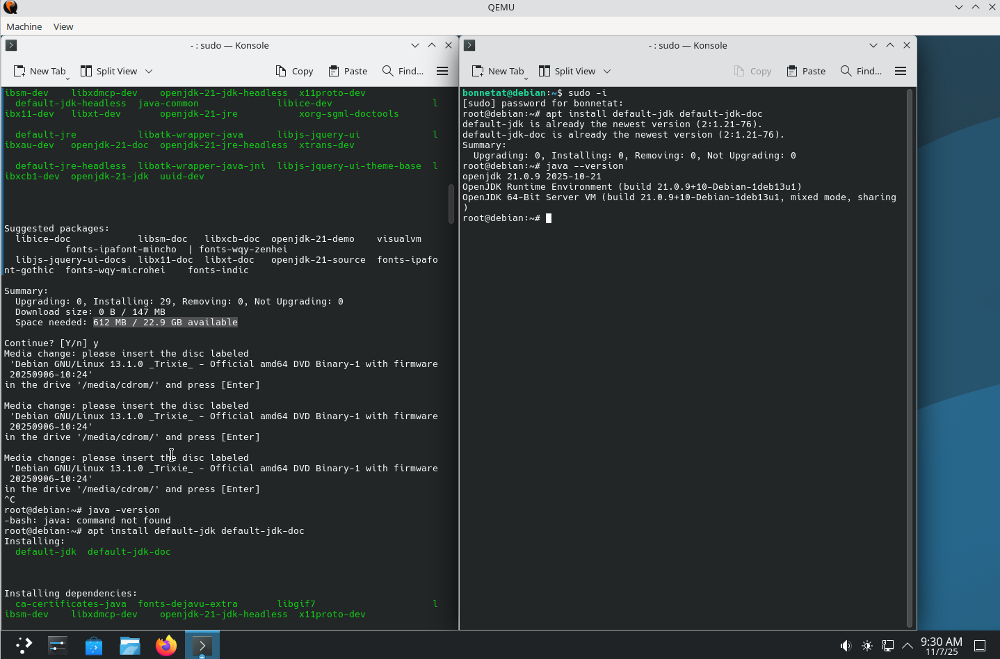

Présentation
Je me nomme Téo Bonnetain, étudiant en 1ère année de BUT Informatique à l’IUT 2 de Grenoble, j'ai toujours beaucoup apprécié l'informatique. Inspiré par l’univers des jeux vidéo dès mon plus jeune âge, j’ai rapidement voulu passer de joueur à créateur pour comprendre l'envers du décor. Ce qui me motive au quotidien, c'est de relever des défis logiques et de transformer des idées en lignes de code. Pour moi, l’informatique est le terrain de jeu idéal pour allier rigueur technique et créativité.
Mes projets

ChatBot
Pour ce deuxième projet nous devions réaliser un ChatBot répondant à des questions de cultures générales posé par l'utilisateur. Ces questions devaient répondre à un certains format.


Installation d'un poste de travail
Durant cette mise en situation j'ai réalisé l'installation et la configuration complète d'un poste de travail sous Debian 12, en apprenant à administrer un système.
